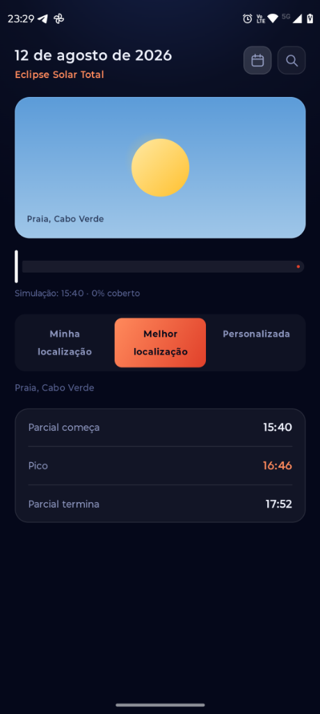

Saiba exatamente se um eclipse solar ou lunar é visível de onde você está. Um aplicativo totalmente offline que calcula horários locais de início, pico e fim sem fazer qualquer chamada de rede.

Tecnologia de ponta e matemática astronômica local para prever eclipses a qualquer momento.
Todos os cálculos e a base de dados de mais de 34 mil cidades estão embutidos. Funciona perfeitamente no meio do deserto ou em alto mar.
Minha localização (GPS), busca por cidade ou a ferramenta exclusiva que localiza o ponto de melhor visibilidade mais próximo de você.
Gráfico interativo e slider que demonstram o progresso exato da cobertura (início → pico → fim) no fuso horário local.
Acesse o histórico e as datas futuras de eclipses solares e lunares com mecanismos rápidos de busca e filtragem.
Use o GPS atual, busque uma cidade na base de dados Room offline ou peça para encontrar a melhor visibilidade próxima.
O motor matemático avalia as circunstâncias locais de visibilidade do eclipse selecionado para as coordenadas.
Use o slider interativo para ver a cobertura em cada horário e planeje sua observação com antecedência.
Consulte todos os dados de início, pico e fim em campo, sem precisar de internet ou sinal de celular.
Desenvolvido com tecnologias modernas do ecossistema Android para máxima eficiência.